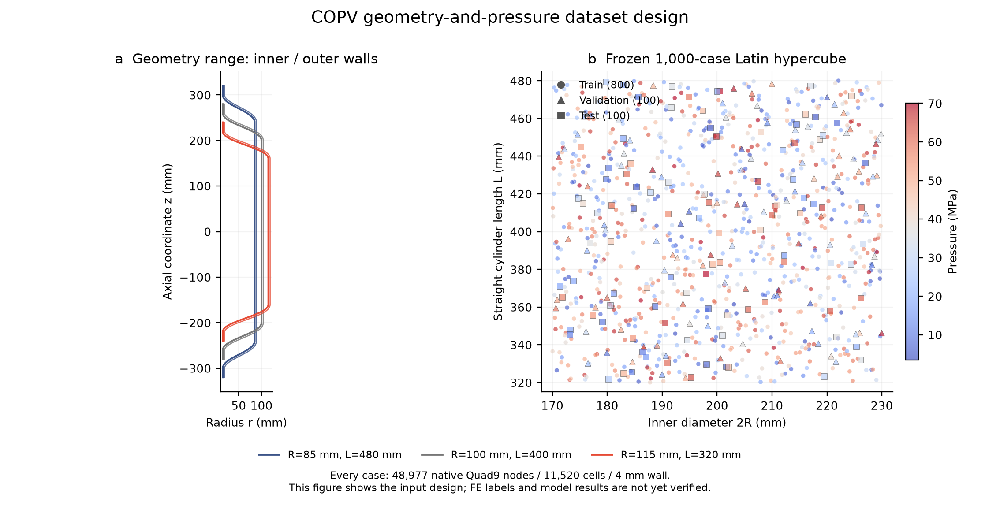

01
验收 / 总结 / 介绍
已冻结1000个不同几何与压力的设计，800/100/100划分；每例48,977原生节点、11,520个Quad9。先GPU求解验证，再以4个独立GPU分片生成真实FE标签。
已冻结1000个不同几何与压力的设计，800/100/100划分；每例48,977原生节点、11,520个Quad9。先GPU求解验证，再以4个独立GPU分片生成真实FE标签。

已冻结1000个不同几何与压力的设计，800/100/100划分；每例48,977原生节点、11,520个Quad9。先GPU求解验证，再以4个独立GPU分片生成真实FE标签。
汇总有效/失败数量，保留可复现配置和完整场数据